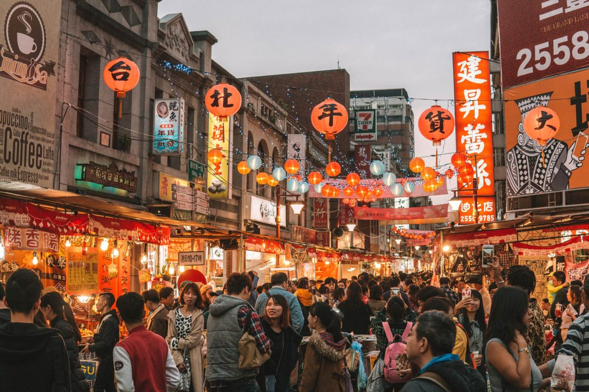
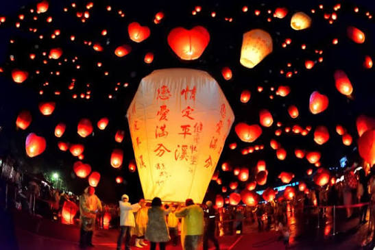
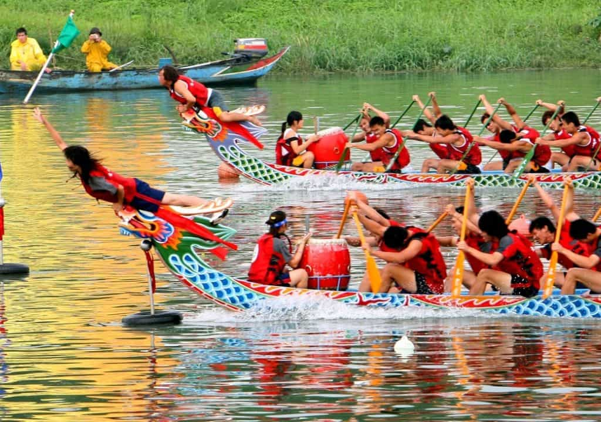
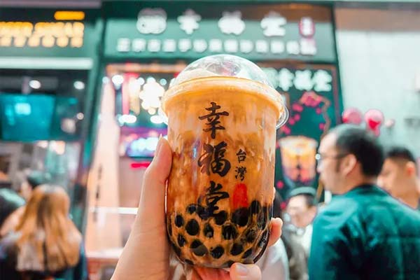
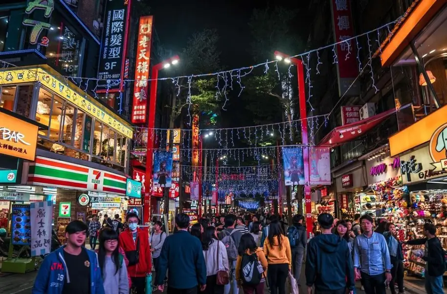
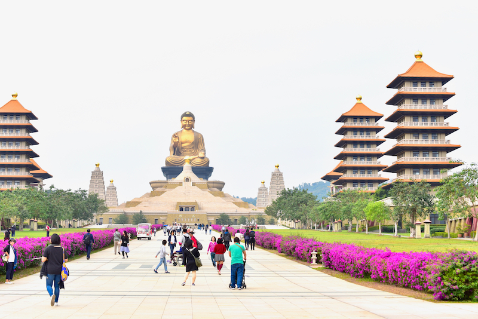

Văn hóa Đài Loan – Giao thoa truyền thống và hiện đại

Đài Loan không chỉ thu hút du khách bởi những thành phố hiện đại, cảnh quan thiên nhiên tuyệt đẹp hay nền ẩm thực nổi tiếng. Điều làm nên sức hấp dẫn đặc biệt của hòn đảo này chính là nền văn hóa đa dạng, nơi những giá trị truyền thống được gìn giữ trong một xã hội không ngừng phát triển.
1. Hòn đảo của những sắc màu văn hóa
Đài Loan nằm ở khu vực Đông Á, sở hữu một nền văn hóa được hình thành qua nhiều giai đoạn lịch sử và sự giao thoa giữa các cộng đồng khác nhau. Văn hóa Đài Loan chịu ảnh hưởng sâu sắc từ truyền thống Hoa ngữ, đồng thời mang những dấu ấn của thời kỳ thuộc địa Nhật Bản, các cộng đồng bản địa và sự phát triển của xã hội hiện đại.
Chính sự kết hợp này đã tạo nên một bản sắc văn hóa độc đáo, thể hiện trong ngôn ngữ, kiến trúc, ẩm thực, nghệ thuật và đời sống thường ngày. Đối với du khách, khám phá Đài Loan không chỉ đơn giản là tham quan những địa danh nổi tiếng, mà còn là cơ hội tìm hiểu cách người dân gìn giữ truyền thống trong một thế giới hiện đại.
2. Những lễ hội truyền thống đặc sắc
Tết Nguyên Đán – Dịp đoàn viên của gia đình

Tết Nguyên Đán là một trong những dịp lễ quan trọng nhất tại Đài Loan. Đây là thời điểm các gia đình sum họp, cùng nhau chuẩn bị những bữa ăn truyền thống và thực hiện các phong tục cầu chúc may mắn cho năm mới. Nhiều khu vực được trang trí bằng đèn lồng đỏ, câu đối và các biểu tượng mang ý nghĩa thịnh vượng; các ngôi chùa cũng trở nên nhộn nhịp khi người dân đến cầu bình an, sức khỏe và may mắn.
Lễ hội đèn lồng – Ánh sáng của hy vọng

Lễ hội đèn lồng thường được tổ chức vào dịp Tết Nguyên Tiêu, đánh dấu thời điểm kết thúc các hoạt động Tết Nguyên Đán. Một trong những sự kiện nổi tiếng nhất là Lễ hội đèn lồng Bình Khê, nơi người dân và du khách có thể viết những lời chúc lên đèn trời trước khi thả chúng lên bầu trời đêm.
Lễ hội thuyền rồng – Truyền thống và tinh thần cộng đồng

Lễ hội thuyền rồng là một sự kiện truyền thống được tổ chức vào dịp Tết Đoan Ngọ. Hoạt động nổi bật nhất là những cuộc đua thuyền rồng, nơi các đội thi phối hợp chèo thuyền theo nhịp trống để về đích. Không khí lễ hội trở nên sôi động với sự cổ vũ của người dân, các hoạt động văn hóa và những món ăn truyền thống như bánh ú.
3. Ẩm thực – Niềm tự hào của người Đài Loan
Ẩm thực là một trong những yếu tố quan trọng nhất tạo nên sức hấp dẫn của Đài Loan.
Trà sữa trân châu – Biểu tượng ẩm thực toàn cầu

Đài Loan thường được xem là nơi khai sinh ra trà sữa trân châu hiện đại. Sự kết hợp giữa trà, sữa và những viên trân châu dai mềm đã tạo nên một thức uống được yêu thích trên toàn thế giới. Với Đài Loan, trà sữa không chỉ là một sản phẩm ẩm thực mà còn là biểu tượng cho sự sáng tạo và khả năng kết hợp giữa truyền thống uống trà với phong cách sống hiện đại.
Chợ đêm – Trái tim của văn hóa đường phố

Các khu chợ đêm là một trong những nét đặc trưng nổi bật của Đài Loan. Những khu chợ như Shilin, Raohe và Ningxia thu hút đông đảo người dân và du khách nhờ sự đa dạng của các món ăn đường phố, cửa hàng mua sắm và những hoạt động giải trí. Du khách có thể thưởng thức gà chiên Đài Loan, bánh tiêu, mì bò, đậu phụ thối và bánh bao áp chảo.
Văn hóa trà – Nghệ thuật của sự thư thái
Trà có vai trò quan trọng trong văn hóa Đài Loan. Hòn đảo này nổi tiếng với nhiều loại trà chất lượng cao, trong đó có trà ô long. Văn hóa thưởng trà không chỉ tập trung vào hương vị mà còn đề cao sự thư thái, cách pha trà và trải nghiệm thưởng thức. Tại nhiều khu vực, du khách có thể tham quan các đồi trà, tìm hiểu quy trình sản xuất và trải nghiệm những buổi thưởng trà truyền thống.
4. Những ngôi chùa và giá trị tâm linh

Các ngôi chùa tại Đài Loan đóng vai trò quan trọng trong đời sống văn hóa và tinh thần của người dân. Nhiều ngôi chùa kết hợp các yếu tố tín ngưỡng dân gian, Phật giáo và Đạo giáo, tạo nên những không gian tâm linh đa dạng. Một số ngôi chùa nổi tiếng thu hút đông đảo du khách nhờ kiến trúc truyền thống, những tác phẩm điêu khắc tinh xảo và các nghi lễ đặc sắc.
Đối với nhiều người dân, việc đến chùa không chỉ nhằm cầu nguyện mà còn là cách tìm kiếm sự bình an, thể hiện lòng biết ơn và duy trì kết nối với cộng đồng. Khi tham quan, du khách nên giữ trật tự, ăn mặc phù hợp và tôn trọng các hoạt động tín ngưỡng đang diễn ra.
5. Đài Loan hiện đại – Nơi truyền thống gặp gỡ công nghệ
Bên cạnh những giá trị truyền thống, Đài Loan còn là một trong những trung tâm công nghệ quan trọng của thế giới. Đài Bắc là thành phố nổi bật với những công trình hiện đại, hệ thống giao thông phát triển và nhịp sống năng động. Taipei 101 từng là tòa nhà cao nhất thế giới và hiện vẫn là một biểu tượng kiến trúc nổi bật của thành phố.
Sự phát triển của công nghệ không khiến các giá trị truyền thống biến mất. Ngược lại, nhiều hoạt động văn hóa được quảng bá thông qua các nền tảng số, các sự kiện nghệ thuật hiện đại và những không gian sáng tạo. Đây chính là điểm đặc biệt của Đài Loan: một xã hội có thể phát triển nhanh chóng nhưng vẫn duy trì sự kết nối với lịch sử và bản sắc văn hóa của mình.
6. Một nền văn hóa đáng để khám phá
Văn hóa Đài Loan là sự kết hợp hài hòa giữa truyền thống và hiện đại, giữa những giá trị lịch sử và tinh thần sáng tạo của xã hội ngày nay. Từ các lễ hội truyền thống, nền ẩm thực phong phú đến những ngôi chùa cổ kính và các thành phố hiện đại, mỗi khía cạnh đều mang đến một góc nhìn khác nhau về cuộc sống trên hòn đảo này.
Đến Đài Loan không chỉ để ngắm nhìn những địa danh nổi tiếng, mà còn để cảm nhận một nền văn hóa sống động, nơi quá khứ và hiện tại cùng tồn tại trong từng khoảnh khắc đời thường.